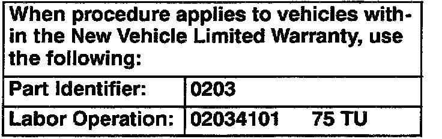

Paint - Swirl Mark and Fine Scratch Reduction
Group: 50Number: 01-01
Date: Aug. 16, 2001
Subject:
Paint Finish, Reducing Swirl Marks and Fine Scratches
Supersedes T.B. Group 50 number 00-02 dated Aug. 22, 2000 due to change in m.y.
Condition
New vehicles (prior to Retail Delivery) with swirl marks and or fine scratches from polishing or cleaning.
Service
Finish can be significantly improved without the use of harsh polishing compounds and high speed buffing.
Use the following steps IN SEQUENCE to insure the greatest margin of paint surface improvement:
CAUTION!
Always read and follow manufacturer Cautions and Warnings regarding use of product.
- Wash vehicle using a mild automotive detergent.
- Hand dry vehicle.
Note:
DO NOT wash or dry vehicle in direct sunlight Rapid water/soap solution evaporation may form "water spots" on the paint surface.
- Hand apply 3M Perfect-It(TM) Paste Wax (3M Part No. 39526) or equivalent (follow manufacturer instructions regarding use of product).
- Apply wax to panel sized area (door, fender etc.) using a firm circular motion.
After wax dries to a hazy finish:
- Polish by hand using a 3M Perfect-It(TM) detailing cloth (3M Part No. 39016) or a clean dry terry cloth towel.

New Vehicle Limited Warranty Information